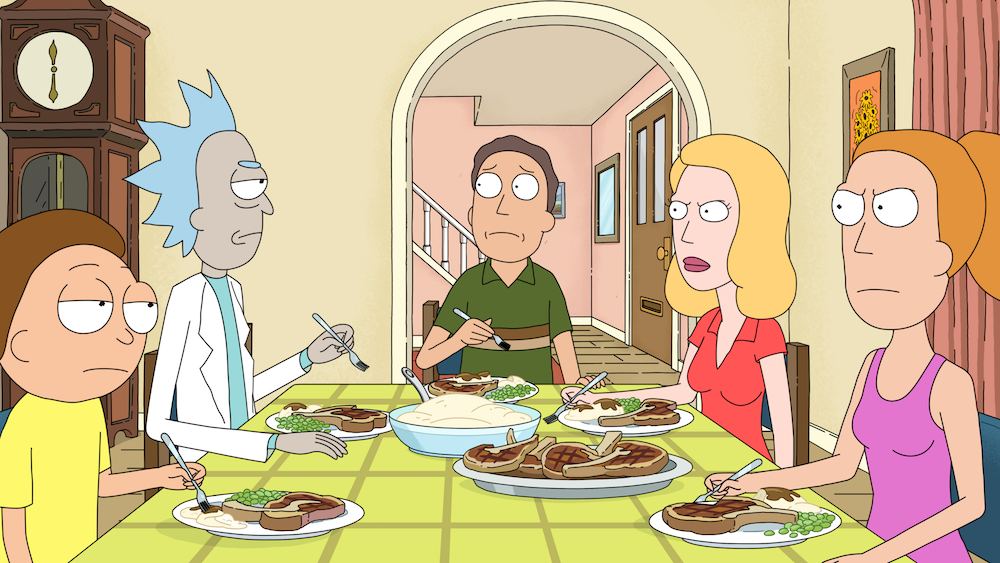

About Rick
Rick is a genius! Despite knowing humans and humanity, he still chooses to live with us crawly creatures and not move to a better planet/world/universe.
Rick with his family
Ricks Characteristics
- He has a big brain
- He can turn into a pickle
- He is the anti-citadel of Ricks, Rick
Rick's Family
Rick has a weird family. Beth, Summer and Morty. Oh yes, and Jerry. The Jerry of all the Jerries that any Rick of all Ricks would despise, that Jerry. Click on the links to know more about them: